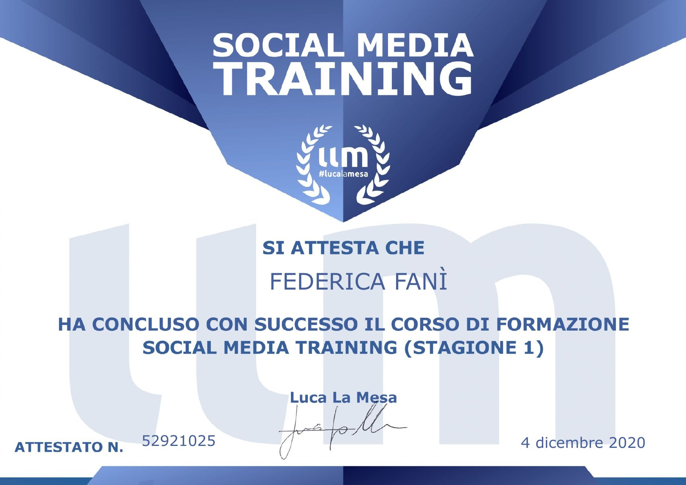
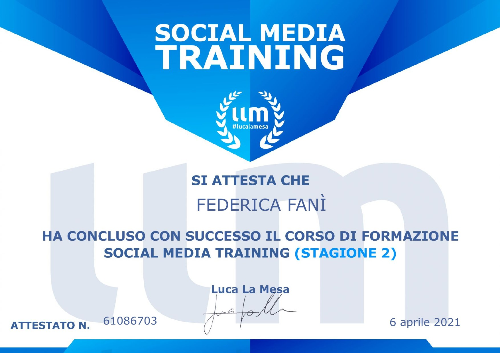
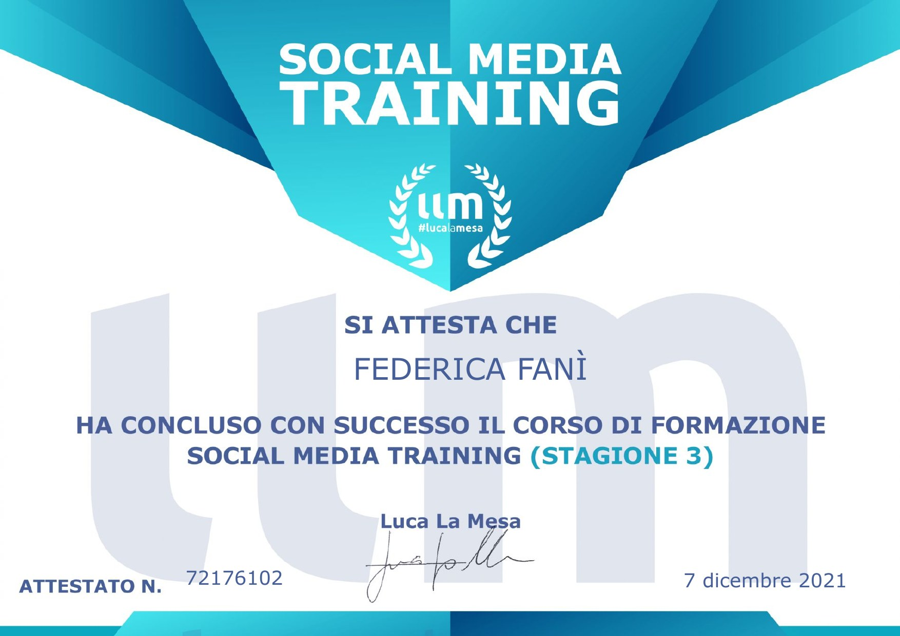
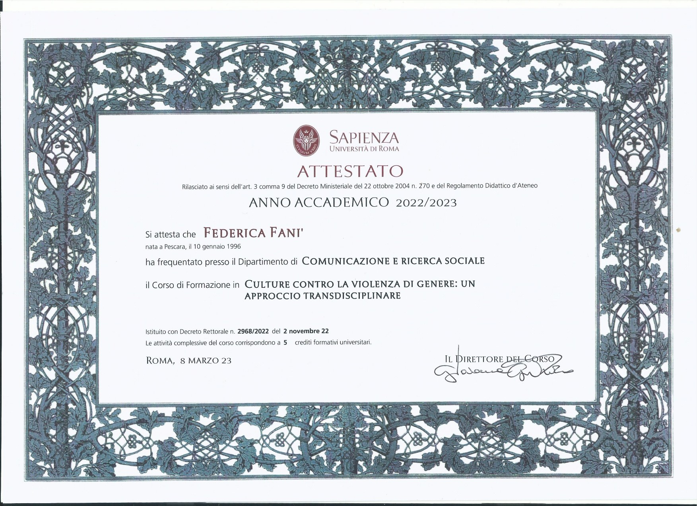

La formazione continua è parte del mio lavoro, non un optional. Qui trovi le certificazioni ottenute e quelle che sto costruendo.




La competenza certificata si vede nei risultati concreti. Parliamoci.
Scrivimi